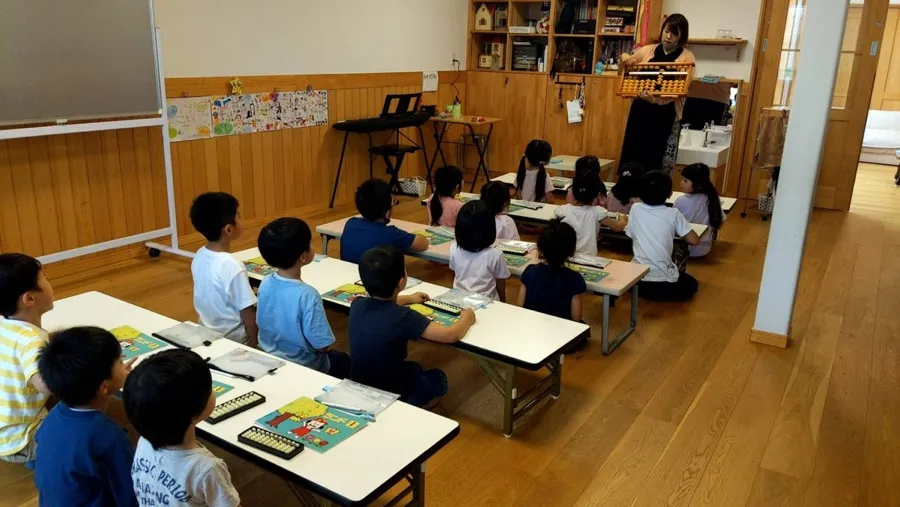

そろばん教室を、
低リスクで開業する。
直営約80教室・生徒約3,500名。関西最大級の楽珠そろばん教室が、
「小商圏でも成立する × 仕組み化された教室モデル」を全国へ広げます。
4年平均通塾年数
8時間講師育成の所要時間
80%売上総利益率（生徒30名時）
50万円想定最大持ち出し金額

直営約80教室・生徒約3,500名。関西最大級の楽珠そろばん教室が、
「小商圏でも成立する × 仕組み化された教室モデル」を全国へ広げます。
立場によって、必要な情報は違います。ご自身に近い方をお選びください。
習いたい子は増えているのに、教室は減り続けている。
この需給ギャップが、いま開業する最大の理由です。
一度閉まった教室は戻りません。空白になった商圏を、仕組み化されたモデルで埋めていけるのが今の市場です。
楽珠そろばん教室は2015年の開校から直営約80教室・生徒約3,500名へ成長（教室数は関西最大）。教室あたり生徒数約30名を維持したまま拡大してきた「再現性」こそが、FCとしての強みです。
他の習い事と無理なく併用でき、保護者に選ばれやすい設計。
1クラス12名まで。集中力を高める授業設計で成果を出す。
一人ひとりの進度に合わせた指導。平均通塾年数4年の定着力。
欠席連絡・月謝支払いはオンライン完結。事務負担を最小化。
テナント型の大手は商圏内児童数1,000名以上が必要。レンタルスペース活用の楽珠モデルは300人以上で成立します。大手と正面衝突しない非競合マーケットが、全国に広がっています。
教室スペースと運営ノウハウを活かした、教育事業者の併設モデル。
フリーランスの副業として開校。講師採用×DX運営で本業と両立。
大手FCの数分の一の負担で始められ、生徒が増えてもロイヤリティは増えません。加盟店の利益を最大化する価格構造です。
| 項目 | 楽珠そろばん教室 | 大手そろばんFC（例） |
|---|---|---|
| 加盟金 | 30万円（2校目以降は10万円/校） | 120万円 |
| ロイヤリティ | 月額2万円固定（2校目以降は1万円/月・校） | 月額5.5万円 ※生徒50名の場合（生徒数で変動） |
| 収益構造 | 加盟店利益の最大化 | 本部配分が大きい |
| 単月黒字化の目安 | 開校3ヶ月・生徒12名 | — |
| 想定最大持ち出し | 約50万円 | — |
※ 比較は公開情報に基づく目安です。楽珠のモデル収支は加盟店の開校初月実績ベース（体験15名→入会10名・平均月謝6,600円・レンタルスペース）。
経営者として開業する場合は、ご自身のそろばん経験は不要です（そろばん経験のある講師を採用して開校します）。ご自身が先生として教える場合は、3級以上のご経験が必要です（ブランク可）。指導経験はどちらも不要で、約8時間の研修で独り立ちできる育成体系があります。
加盟金30万円に開校準備費用を含め、想定される最大持ち出しは約50万円です。レンタルスペースや自宅を活用することで、固定費を大きく抑えられます。
可能です。欠席連絡・月謝回収はオンラインで完結し、教材・カリキュラムは本部が提供します。講師を採用すれば、運営工数を大きく抑えられます。
商圏内児童数300人以上が目安です。加盟時に本部が商圏分析のアドバイスを行い、エリア選定から並走します。